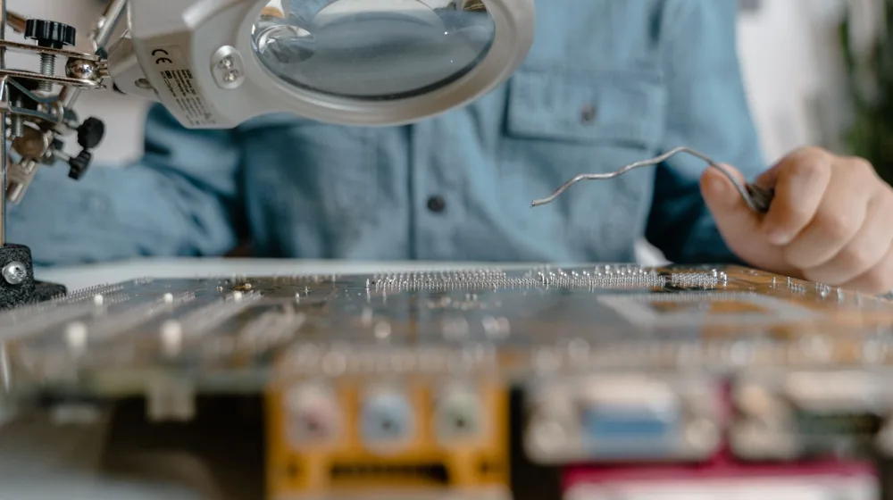

중고 전자기기 구매, 호갱 탈출! 반드시 확인할 7가지 핵심 체크리스트
사진: https://kaboompics.com/ / Pexels (무료 이미지, 출처 표기)
중고 전자기기 구매, 후회 없는 선택을 위한 첫걸음

스마트폰, 노트북, 태블릿 등 고가의 전자기기를 중고로 구매하면 비용을 크게 절약할 수 있습니다. 하지만 설레는 마음으로 구매한 중고 기기가 예상치 못한 문제를 일으킨다면 큰 실망으로 이어질 수 있습니다. 이러한 상황을 피하기 위해 중고 전자기기 구매 전 반드시 확인해야 할 사항들을 정리했습니다. 이 가이드를 통해 후회 없는 현명한 선택을 하시길 바랍니다.
외부 상태 점검: 숨겨진 흔적을 찾아라
가장 먼저 기기 외관을 꼼꼼히 살펴봐야 합니다. 육안으로 확인 가능한 스크래치, 찍힘, 균열 등이 없는지 확인하는 것이 중요합니다. 특히 액정 화면은 사용성과 직결되므로 보호필름을 제거하고 빛에 비춰 잔기스나 파손 여부를 면밀히 관찰해야 합니다. 카메라 렌즈 주변이나 충전 단자, 버튼 등 작은 틈새까지 놓치지 않고 확인하는 것이 좋습니다.
또한, 침수 여부를 확인하는 것도 필수입니다. 대부분의 전자기기에는 침수 라벨이 있습니다. 스마트폰의 경우 유심(USIM) 트레이 안쪽이나 충전 포트 내부에 작고 흰색 또는 붉은색의 침수 라벨이 있는데, 붉은색으로 변색되어 있다면 침수 이력이 있는 기기입니다. 침수 이력이 있는 기기는 당장은 작동하더라도 언제 고장 날지 예측하기 어렵기 때문에 구매를 피하는 것이 현명합니다.
핵심 기능 테스트: 모든 버튼과 포트가 작동하는지
외관만큼 중요한 것이 바로 기기의 핵심 기능이 정상적으로 작동하는지 확인하는 것입니다. 화면 터치 감도, 데드 픽셀(Dead Pixel), 잔상 여부 등 디스플레이 성능을 확인하고 밝기 조절 기능이 원활한지 테스트해야 합니다. 또한, 전원 버튼, 볼륨 버튼 등 물리 버튼의 클릭감과 반응 속도도 점검해야 합니다.
각종 포트(충전 포트, 이어폰 잭 등)에 케이블을 연결하여 정상적으로 인식하고 작동하는지 확인하고, 스피커와 마이크 기능도 반드시 테스트해야 합니다. 카메라의 경우 전면과 후면 모두 사진 및 동영상 촬영을 해보고, 플래시와 자동 초점(AF) 기능도 점검하는 것이 좋습니다. 통화 기능을 테스트하여 상대방 목소리가 잘 들리고 내 목소리도 잘 전달되는지 확인해 보는 것도 좋습니다.
배터리 성능 확인: 수명을 예측하는 중요한 단서
중고 전자기기 구매 시 배터리 성능은 사용 경험에 큰 영향을 미칩니다. 배터리 성능이 저하된 기기는 충전 주기가 짧아지고 발열이 심해질 수 있습니다. 스마트폰의 경우 ‘설정’ 메뉴에서 배터리 성능 상태를 확인할 수 있습니다. 아이폰은 '설정 > 배터리 > 배터리 성능 상태 및 충전'에서 '최대 성능 능력'을 확인할 수 있으며, 일반적으로 80% 이상을 권장합니다. 안드로이드 기기는 제조사 앱이나 별도 앱을 통해 확인할 수 있습니다.
판매자와 직접 만나 거래할 경우, 충전기를 연결하여 충전이 정상적으로 되는지, 그리고 충전 중 비정상적인 발열은 없는지 확인하는 것이 좋습니다. 배터리 성능이 현저히 낮은 기기는 추가적인 배터리 교체 비용이 발생할 수 있으므로, 구매 전 이 점을 고려해야 합니다.
정품 여부 및 보증 기간, 이것만은 꼭!
구매하려는 중고 전자기기가 정품인지, 그리고 아직 제조사 보증 기간이 남아있는지 확인하는 것은 매우 중요합니다. 기기 뒷면이나 설정 메뉴에 기재된 시리얼 넘버(일련번호)를 확인한 후, 해당 제조사 공식 홈페이지에 접속하여 정품 등록 및 보증 기간 조회를 해보는 것을 권장합니다.
특히 스마트폰의 경우, 도난 또는 분실된 기기는 아닌지 반드시 확인해야 합니다. 2026년 08월 기준으로 국내 통신 3사(SKT, KT, LGU+) 모두 'IMEI 통합관리 시스템'을 통해 분실·도난 여부를 조회할 수 있습니다. 기기의 IMEI 번호를 입력하면 분실·도난 기기인지 아닌지를 바로 확인할 수 있으므로, 구매 전 반드시 확인하시기 바랍니다. 도난·분실 기기는 추후 법적인 문제로 이어질 수 있으므로 절대 구매해서는 안 됩니다.
안전한 거래를 위한 판매자와의 소통 노하우
판매자와의 원활한 소통은 안전한 중고거래의 핵심입니다. 궁금한 점은 거래 전 충분히 질문하여 명확한 답변을 받아야 합니다. 기기 상태에 대한 상세한 사진을 요청하고, 설명과 다른 부분이 있는지 꼼꼼히 비교해보는 것이 좋습니다.
직거래 시에는 사람 많은 공개된 장소에서 거래하고, 현장에서 기기 상태를 충분히 확인한 후 결제하는 것이 안전합니다. 택배 거래 시에는 배송 전 기기 작동 영상을 요청하고, 파손 위험이 있으므로 완충재를 충분히 사용하여 포장해달라고 요청하는 것이 좋습니다. 사기 피해를 예방하기 위해 '더치트'와 같은 사기 피해 정보 공유 사이트에서 판매자의 계좌번호나 전화번호를 조회해 보는 것도 좋은 방법입니다.
중고 전자기기 구매 전 확인 체크리스트
아래 표를 통해 중고 전자기기 구매 전 핵심 확인사항들을 다시 한번 정리해 보세요.
구매 후 문제 발생 시 현명한 대처 방안
모든 확인 절차를 거쳐 중고 전자기기를 구매했더라도, 사용 중 예기치 않은 문제가 발생할 수 있습니다. 만약 기기 자체의 결함으로 인한 문제가 발생했다면, 판매자와 연락하여 해결 방법을 모색하는 것이 우선입니다. 거래 당시 나눴던 대화 내용이나 기기 상태를 확인하는 영상/사진 등 증거 자료를 잘 보관해두면 문제 해결에 도움이 될 수 있습니다.
판매자와 원만한 해결이 어렵다면, 중고거래 플랫폼의 분쟁 조정 센터나 소비자보호원 등 관련 기관에 문의하여 도움을 받을 수 있습니다. 하지만 중고거래는 개인 간 거래이므로 법적 보호 범위가 제한적일 수 있다는 점을 인지하고, 애초에 꼼꼼한 확인을 통해 문제 발생 소지를 최소화하는 것이 가장 중요합니다. 정확한 사항은 해당 플랫폼 또는 기관에서 다시 확인하시길 권장합니다.
🔗 이 글도 함께 보면 좋아요: 노트북 구매, 이것부터 보세요! 복잡한 사양 용어 완벽 정리 가이드
관련 추천 상품
이 포스팅은 쿠팡 파트너스 활동의 일환으로, 이에 따른 일정액의 수수료를 제공받습니다.